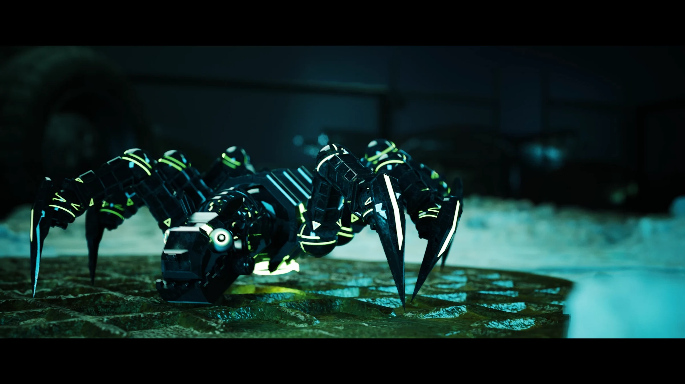
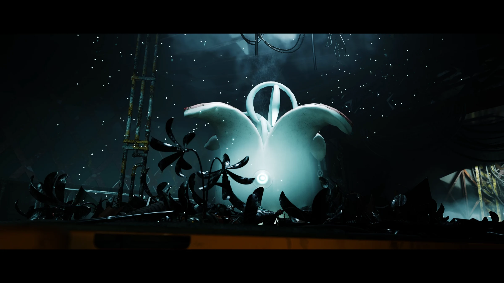
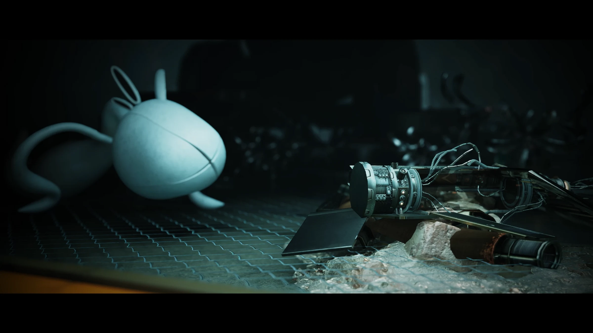
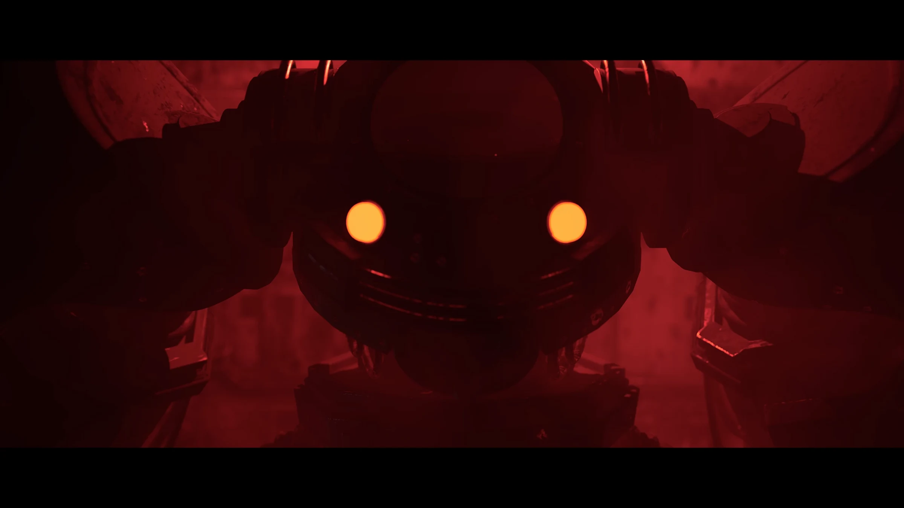
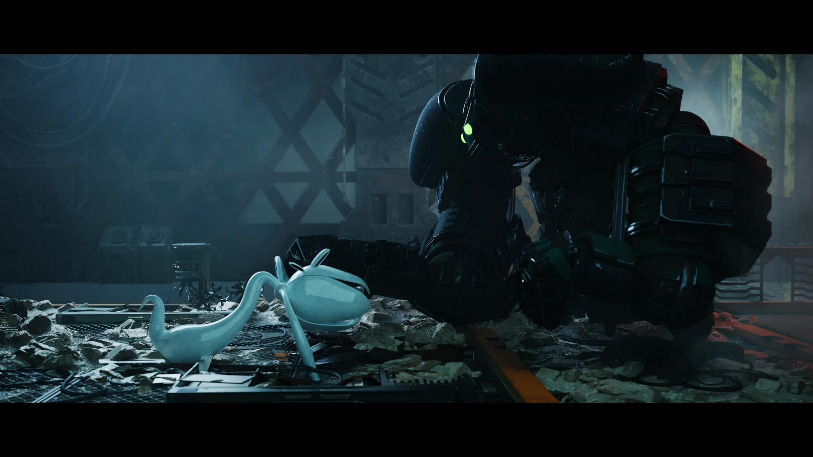
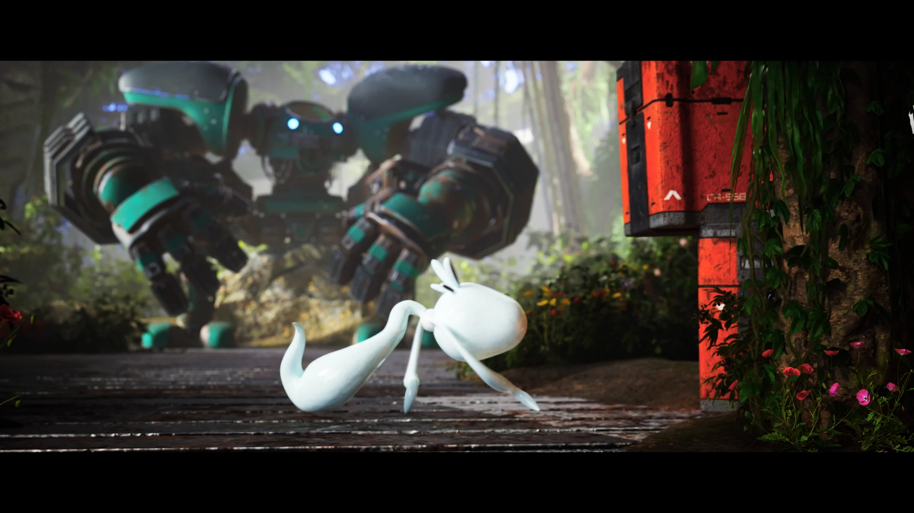
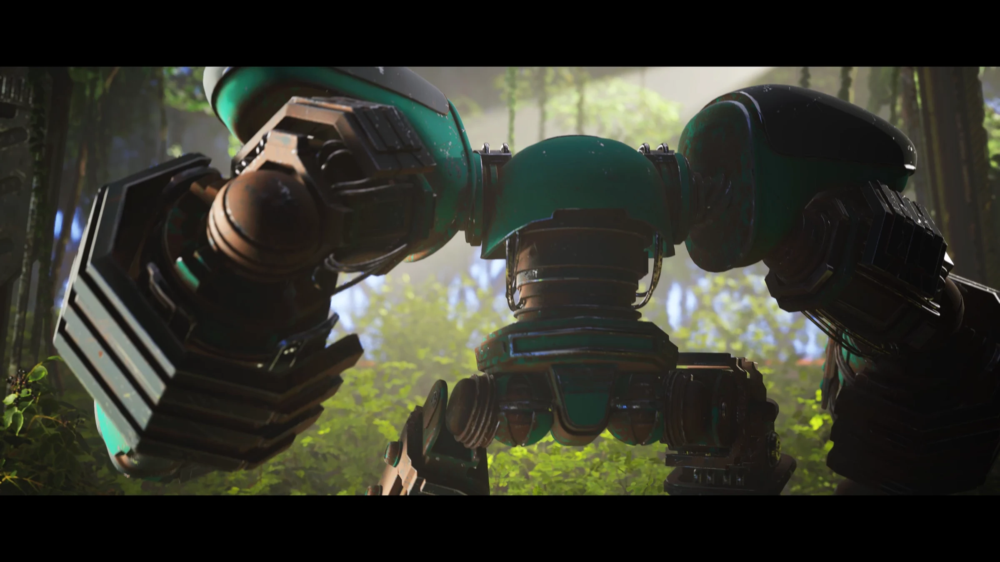
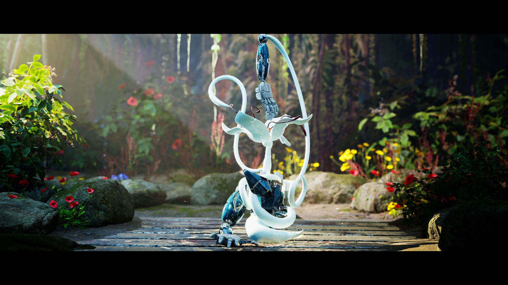
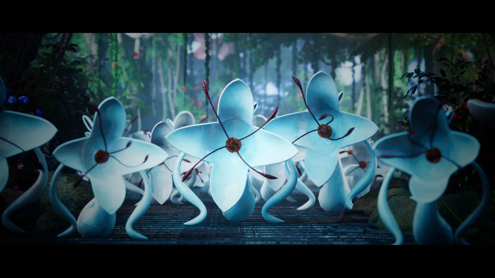

-junk&flower-
푸르름이 사라진 정원에서 / In a world where green has disappeared
2024 / Single-channel video, color, sound / 1920 x 1080 (px), 04’ 31”
2024 / Single-channel video, color, sound / 1920 x 1080 (px), 04’ 31”
처음에는 환경 문제를 단순히 ‘오염’으로 이해했지만,
반복되는 재해 속에서 지구가 인간을 밀어내는 면역 반응처럼 느껴졌다.
작품은 폐허가 된 도시와 기능을 잃은 로봇들로 시작한다.
이들은 인간이 남긴 오염의 잔재이며, 그 속에 자연이 불러낸 괴물 ‘A’가 나타난다. ‘A’는 로봇을 흡수해 식물로 바꾸며 생태계를 재편하고, 파괴자가 아니라 회복자로 기능한다.
이 작업을 통해 나는 “우리가 남기는 흔적은 무엇인가?”라는 질문을 던지고자 했다.
단순한 SF를 넘어, 인간이 사라진 뒤 지구가 어떻게 스스로 회복하고 재구성할 수 있는지를
감각적으로 사유하는 작품이다.
At first, I understood environmental issues simply as a matter of “pollution,”
but through recurring disasters, I gradually felt that the Earth was pushing humans away. It appeared less as a natural phenomenon and more like the immune response of the planet.
The piece begins with a ruined city and robots that have lost their function. These robots, remnants of humanity, embody the residues of pollution. Into this landscape emerges a creature, “A,” summoned by nature itself. This being absorbs the dysfunctional robots and transforms them into plants, reorganizing the ecosystem. The monster “A” is not a destroyer but a restorer, a choice of nature.
Through this work, I wanted to ask “What traces are we leaving behind?” Beyond the realm of science fiction, the piece offers a sensory reflection on how the Earth might recover and renew itself in an ecosystem no longer centered on humankind.









“What traces are we leaving behind?”
←